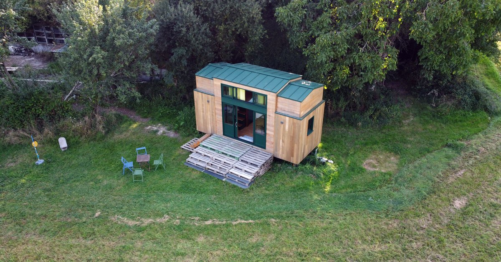
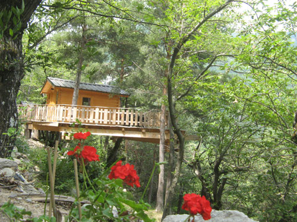
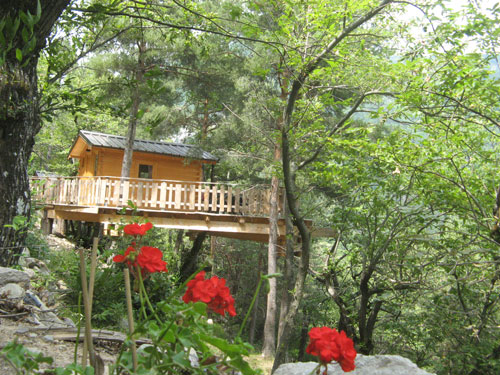

The Green Escape
The Green Escape
Est une jeune entreprise française spécialisée dans l'écotourisme, née de la passion commune de deux amis pour la nature, le confort minimaliste et les modes de vie durables.
Basée au cœur du Périgord Vert, notre mission est simple : offrir une échappée belle et verte à toutes celles et ceux qui souhaitent déconnecter du quotidien, renouer avec l’essentiel et se ressourcer dans un cadre naturel préservé.
 Nos valeurs
Nos valeurs
 Respect de la nature: tous nos hébergements sont conçus en matériaux
biosourcés, intégrés
dans leur environnement avec un impact minimal.
Respect de la nature: tous nos hébergements sont conçus en matériaux
biosourcés, intégrés
dans leur environnement avec un impact minimal.
 Déconnexion digitale: pas d’écran, pas de wifi. Juste vous, la forêt, les
étoiles, et le
chant
des
oiseaux.
Déconnexion digitale: pas d’écran, pas de wifi. Juste vous, la forêt, les
étoiles, et le
chant
des
oiseaux.
 Confort et simplicité: literie haut de gamme, toilettes sèches, poêle à bois,
paniers
petit-
déjeuner bio et locaux.
Confort et simplicité: literie haut de gamme, toilettes sèches, poêle à bois,
paniers
petit-
déjeuner bio et locaux.
 Expérience unique: chaque hébergement est une bulle de calme, pensée pour une
immersion totale.
Expérience unique: chaque hébergement est une bulle de calme, pensée pour une
immersion totale.
 Nos hébergements
Nos hébergements

 

Tous nos logements sont pensés pour 2 à 4 personnes maximum, dans un souci de calme et d’intimité.
Découvrir nos hébergements📍Localisation
Nous sommes implantés dans un domaine forestier de 12 hectares à proximité de Brantôme, en Dordogne.
Chaque hébergement est isolé visuellement des autres pour garantir intimité et silence absolu.